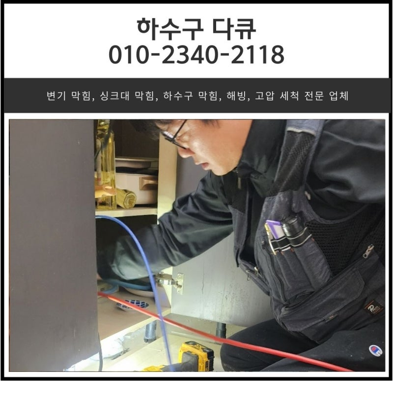
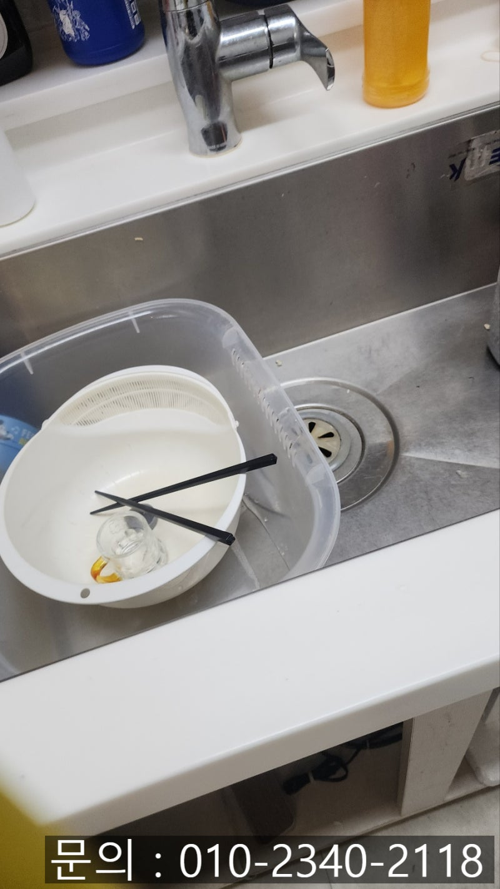
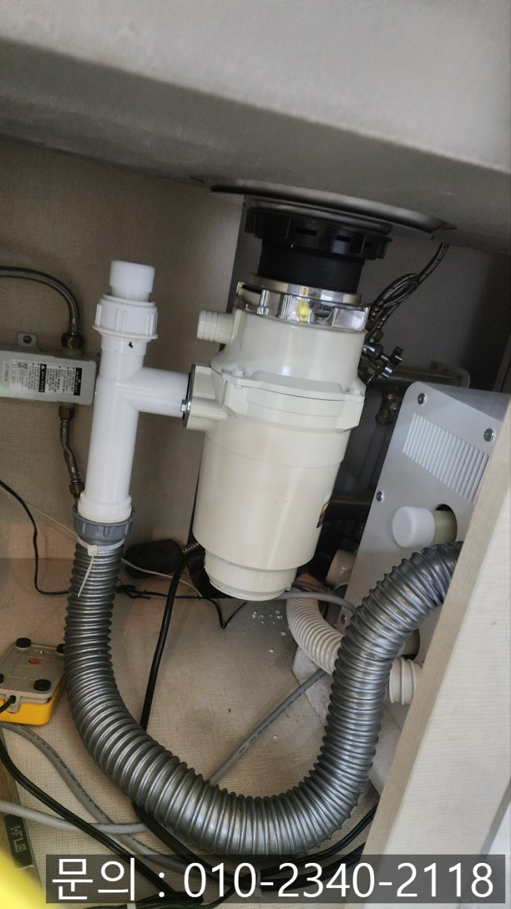
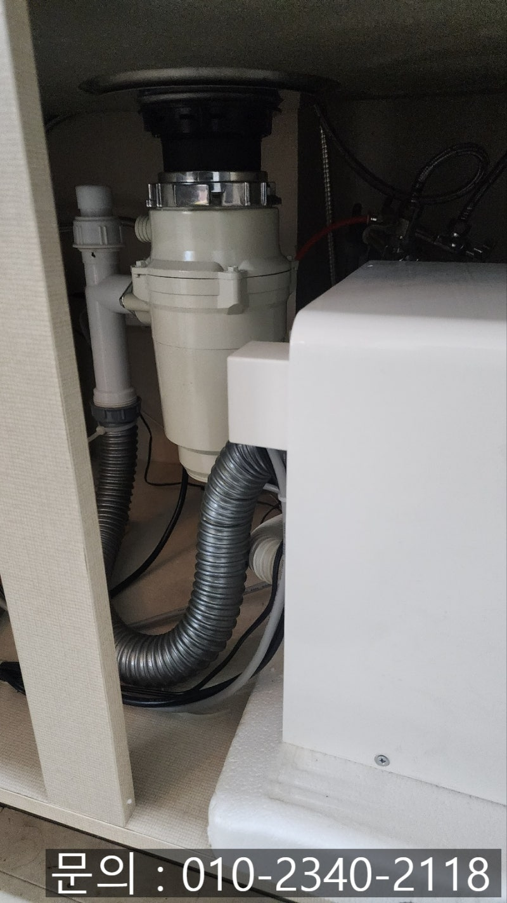
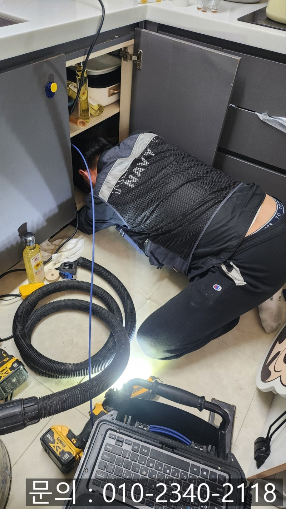
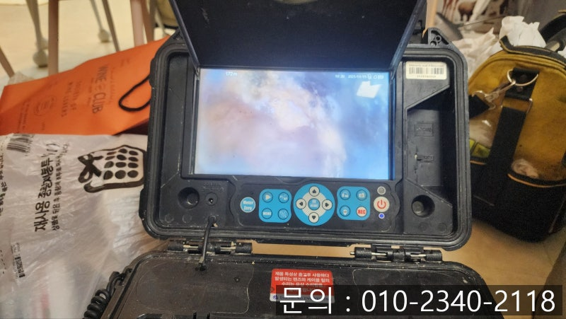
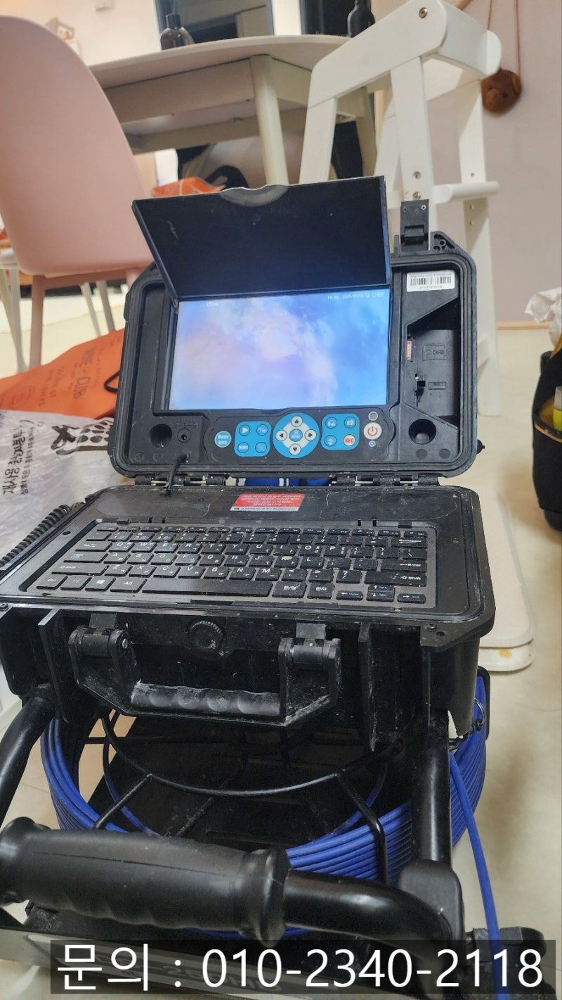
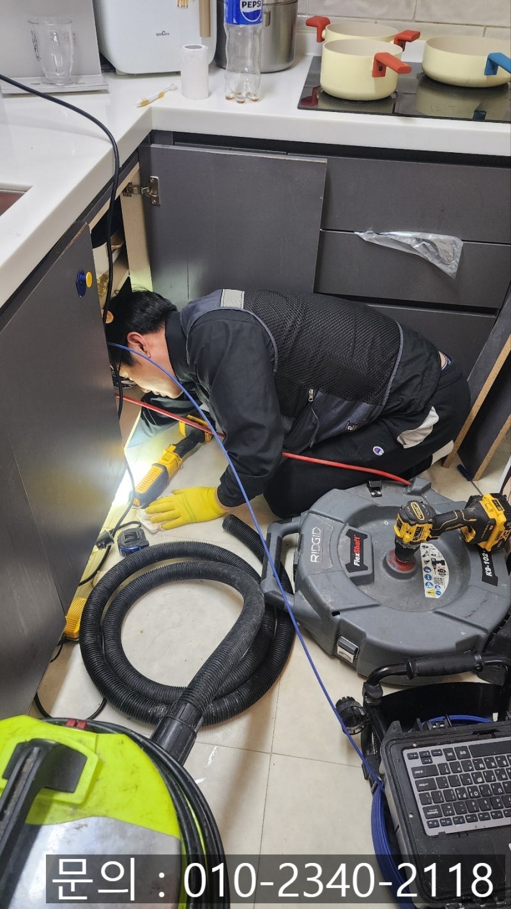

🏠 웰릭스 음식물 처리기 배관 막힘 수리 업체
용인 기흥구 웰릭스 음식물처리기 배관막힘 전문 시공 후기

📋 작업 개요
- 위치: 용인시 기흥구, 용인 기흥, 수원 영통
- 서비스 유형: 웰릭스 음식물처리기, 음식물처리기 배관막힘, 배관 수리, 하수구막힘, 내시경 점검
- 작업 일시: 2025. 3. 10. 9:10
- 업체명: 하수구수사대 (010-5615-2118)
🔍 문제 상황
안녕하세요.
웰릭스 음식물 처리기 배관 막힘 수리 업체 하수구 다큐입니다.
매일 반복되는 주방 일 중에서 가장 하기 싫은 일은 아마도 음식물 쓰레기 버리는 일인 것 같습니다.
겨울철은 조금 괜찮지만 더운 여름에는 악취와 벌레까지 쉽게 생기다 보니 들고나가기가 정말 싫죠.
이런 번거로움을 덜어주고자 싱크대에 연결해서 사용하는 음식물 처리기가 주방에 꼭 필요한 가전으로 떠오르고 있습니다.
대표적으로 싱크대 배수구와 연결해 식기를 세척하는 과정에서 발생하는 음식물 쓰레기를 그대로 흘려보내 분쇄하는 방식의 음식물 처리기가 있는데요.
배수구로 넣어 바로바로 갈아버리다 보니 주방 일도 줄어들고 사용하기 정말 편리했습니다.

🔎 원인 분석
💡 전문가 진단: 슬러지와 이물질이 통로를 꽉 막고 있어 배수가 불가능하며, 고압 세척과 샤프트 타격이 동반되어야 완벽한 해결이 가능합니다.
하지만 배수구에서 갈아 흘려보내는 음식물 찌꺼기들은 정화작업 없이 흘러가게 되다 보니 수질 오염의 문제도 심각해지고, 음식물 처리기가 아무리 좋아도 제대로 갈리지 않은 음식물 찌꺼기들로 인해 하수구 막힘이나 하수구 역류 등 배관에 많은 문제가 발생해 조심하셔야 합니다.
오늘은 웰릭스 음식물 처리기 배관 막힘으로 다녀온 현장을 소개해 드릴게요.
고객님께 싱크대 막힘이 발생했다는 연락을 받고 신속하게 현장에 도착했습니다.
식사를 마치고 그릇을 닦아야 하지만 사용한 물이 흘러가지 않아 옆으로 빼놓으신 상태로 하수구 다큐를 기다리고 계셨어요.
주방으로 들어가 싱크대를 확인해 보니 웰릭스 음식물 처리기를 사용하고 계셨습니다.
싱크대 배수구와 연결해서 사용하는 웰릭스 음식물 처리기는 배수구로 음식물 찌꺼기를 흘려보내 준 다음 잘게 갈아서 흘려보내는 방식으로 작동됩니다.
음식물을 잘게 갈아 흘려보내는 방식이다 보니 흘려버린 음식물이 배관에 쌓이면서 물길을 막아 싱크대 막힘이 발생한 것 같아요.
웰릭스 음식물 처리기 배관 막힘 수리 업체 하수구 다큐는 정확한 원인을 눈으로 직접 확인해 보기로 했습니다.

🔧 작업 과정
내시경 카메라를 배관 내부로 진입시켜 얼마나 많은 이물질이 쌓여있는지, 배관의 길이와 크기 등의 파악이 필요했어요.
배관 전용 내시경 카메라가 진입하자 예상했던 대로 많은 양의 기름 슬러지와 음식물 찌꺼기가 오랜 시간 쌓여 딱딱하게 굳어있는 것을 확인할 수 있었습니다.
배관 내부에 많은 양의 이물질이 쌓여있다 보니 사용한 물이 흘러나가지 못해 싱크대 배관 막힘이 발생한 것 같아요.
내시경 카메라를 이용해 촬영한 배관 모습을 보여드리면서 작업 방법, 작업에 소요되는 시간, 비용 등을 안내해 드리고 작업을 진행하기로 했습니다.
하수구 막힘이 발생하게 되면 가장 궁금하신 게 비용일 거예요.
유선상으로 대략적인 금액을 안내해 드리고 있지만 현장마다 차이가 있다 보니 직접 방문해 원인을 파악하고 정확한 금액을 안 해드리고 있습니다.
웰릭스 음식물 처리기 배관 막힘 수리 업체 하수구 다큐는 배관 청소를 하기 위해 플렉스 샤프트 장비와 석션을 준비했습니다.
플렉스 샤프트 장비는 배관 내부에 진입해 본체에 연결되어 있는 전동드릴이 회전하는 힘을 전달받아 배관 내부에서 360도로 회전하면서 내벽에 붙어있는 이물질을 잘게 갈아주는 역할을 합니다.
잘게 갈려 떨어져 나온 기름 슬러지나 각종 이물질들은 석션을 사용해 빨아들여 완벽하게 제거하는 작업을 반복해서 진행해요.
한참을 반복해서 청소 작업을 진행하자 모든 이물질이 제거되고 깨끗해진 내부를 확인할 수 있었습니다.
옆에서 작업을 지켜보시던 고객님도 깨끗해진 배관 내부를 보고 몹시 만족해하셨어요.
마지막으로 많은 양의 물을 흘려보내도 막힘이나 역류 없이 정상적으로 통수되는 것을 확인하고 작업을 마무리했습니다.


✅ 작업 완료
음식물 처리기는 우리의 생활을 편리하게 도와주지만 싱크대 하수구 막힘이 자주 발생할 수 있다는 단점이 있습니다.
지금 하수구 막힘으로 고민하고 계신다면 연락 주세요.
책임지고 완벽하게 해결해 드리겠습니다.




⚠️ 음식물처리기 올바른 사용법
- ✅ 기름기가 많은 음식(지방류, 육류 비계 등)은 하수구 고착의 주원인이 되므로 투입하지 말아주세요.
- ✅ 부피가 크거나 단단한 채소, 과일 껍질은 잘게 자르거나 일반 쓰레기로 분리해 주세요.
- ✅ 작동 시 충분한 양의 물을 동시에 흘려보내 잘게 갈린 찌꺼기가 배관 끝까지 흘러가게 하세요.
- ✅ 배수가 느려지는 느낌이 들면 화학 세정제에 의존하기보다 내시경 배관 점검을 권장합니다.
💡 핵심 정리
- 확실한 장비 작업(내시경 점검 및 샤프트 스케일링)으로 원인을 뿌리 뽑습니다.
- 작업 후 1년 이내에 동일한 부위 재발 시 100% 무상 A/S 서비스를 보장합니다.
- 서울 · 경기 · 인천 전 지역에 24시간 언제든 긴급 출동할 수 있도록 항시 대기 중입니다.
❓ 자주 묻는 질문 (FAQ)
🚨 용인 기흥구 웰릭스 음식물처리기 배관막힘 문제로 고민이신가요?
정확한 원인 진단과 확실한 시공으로 재발 없는 해결을 약속드립니다.
24시간 긴급 출동 | 서울 · 경기 · 인천 전지역 | 1년 내 재발 시 무상 A/S